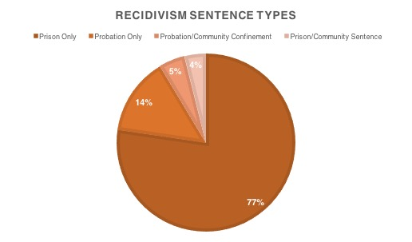
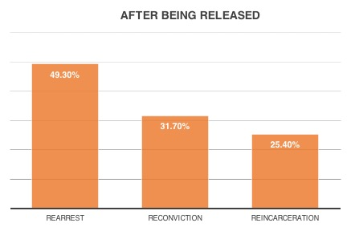

A recently released study done by the Bureau of Justice Statistics found that almost 50 percent of those released from federal prison would be arrested within eight years, when only about 6 percent of all Americans will ever be incarcerated. However, the only meaningful discussion is surrounding private prisons and the cost of housing prisoners. If a town’s fire department only put out half of the fires that they are called to, their effectiveness would be questioned and something would most likely change to raise that number.
Many federal detention centers are also known as “correctional facilities” in which people who broke the law are sent to be punished for their actions and prepared for life when they are released. Looking at the numbers, it is clear that these centers are not doing what they are intended to do, rehabilitate people so that they will be able to become a valuable member of society.
So what is the reason for the poor record of the American prison system? Some would argue that there are just bad people in the world who will always do bad things no matter what situation they are in. While this may be true for some, it is hard to imagine that this phenomenon could be responsible for the staggering amount of individuals that seem to be perpetually in the correctional system.
The first step to correcting this issue is more about the world outside of these correctional facilities. In our society the life of a convicted felon is unbelievably tough. An individual is sent to prison as a punishment, they are stripped of their freedom to choose what they do, how they dress, what they eat, when they wake up, and anything else having to do with everyday life. When someone’s sentence is over, one would think that since they have served their punishment, they will be allowed to join society with a chance to become a valuable piece of it. The reality is much different. For a convicted felon, the task of finding a job on their own is almost impossible. There is a box on most job applications which asks whether the person filling out the application has been convicted of a felony, if that box is checked yes, in most instances, the application is trashed.
When someone is released from prison they are assigned a parole officer to oversee them. They are also charged a parole fee, which if not paid, could result in the person being sent back to prison. With little ability to make a decent living wage while still being able to pay this parole fee, the options for those just released from jail are slim. For many, the only option is to fall back into the old patterns of gang activity and other illegal ways to make a living.
While attempting to change the public opinion on those who have served time in federal prison may be impossible, more vocational training and other educational programs may give former inmates and better shot at a second chance.


Data Courtesy of Bureau of Justice Statistics
Raw Data Link Here!
Clean Data with Analysis Link Here!
Sketch Link Here!
Snackable Graphic Link Here!